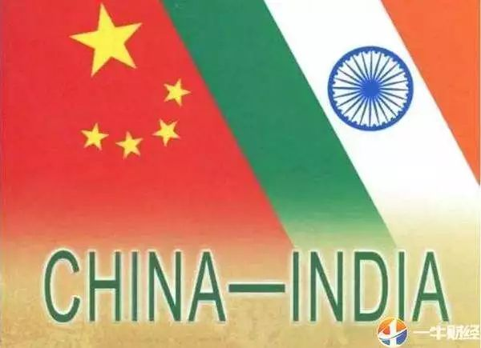
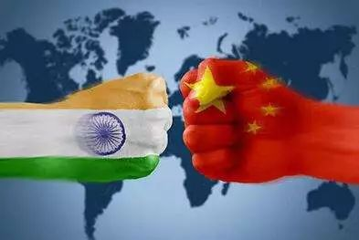

收录于合集

简 介
【 作者 】
林民旺，复旦大学国际问题研究院研究员
【 编辑 】徐枫潇
【 来源 】
《外交评论》2019年第1期
核心观点
随着中印实力差距的进一步拉大、国际环境的新变化，加之印度自身的变化，中印关系原有的战略合作基础日渐削弱。在全球层面，原有的合作议题已经消失或者已经不再重要。在地区层面，随着“一带一路”倡议的推进，双方在地区影响力上的竞争更加凸显。在双边层面，传统争议问题的管控机制也面临新挑战。2017年爆发的洞朗对峙是这一大趋势的集中体现。随着2018年4月在武汉举行的领导人非正式会晤，中印开始寻求新的互动模式。如何在变化的国际和地区环境下重构两国关系的战略新基础，这是目前需要思考的紧要问题。
【关键词】中印关系；战略合作；地缘政治对峙；莫迪政府；“一带一路”；洞朗
正 文
2012年中共十八大以来，中国开始更加积极地经略周边，提升对印度及南亚外交的重要性，在南亚推进“一带一路”倡议。与此同时，在2014年的印度大选（印度议会下院选举）中，印度人民党以压倒性优势胜出，为莫迪政府“建设一个强大、自立和自信的印度”提供了重要的国内支持。两国新政府一开始都有意提升彼此关系。然而经过几年互动，中印关系由最初的高期待逐步滑到2017年的最低点，双方边防人员在洞朗地区对峙长达72天。
正是在这一背景下，需要检视中印关系的战略基础变化，这一变化既是国际大环境变化所致，也是中印两国自身变化所共同导致的，而中印领导人武汉会晤后的合作趋势，为重构两国战略基础提供了重要契机。 论文分四个部分展开论述，逐次分析中印关系在全球、地区与双边层面战略基础削弱的现象及其原因，最后对正在浮现的合作趋势和努力方向进行评估，希冀重构两国关系的战略基础。

一、中印在全球问题领域合作弱化
1988年印度总理拉吉夫·甘地访华开启了中印关系正常化的进程。冷战结束后，中印双方在建立边境信任措施、发展经贸关系方面取得了显著进展，逐步建立起各层级、各领域的沟通对话机制。1998年的印度核试验同样对中印关系造成巨大冲击，但是两国关系很快就得以改善，并在2003年印度总理瓦杰帕伊访华后，实现了一系列重要突破。随后，以国大党为首的团结进步联盟（UPA）开始长达10年时间的执政，在此过程中，中印两国也逐步发展出一套较为成熟而稳定的互动模式。
这一互动模式可概括为 “ 全球合作、地区竞争、双边管控 ” 。在全球问题上，中印战略利益基本一致，在很多具体议题上都能形成共同立场。在地区层面，双方共同利益较弱，虽然存在地区影响力的竞争，但是在南亚及印度洋地区，中国影响力比较有限。而在双边层面，基本上都是长期形成的 “ 旧问题 ” ，历史上双方曾多次努力而未果。正由于短期内难以解决，中印双方一直都是通过 “ 搁置 ” 或者管控分歧来处理，以此为前提，中印经济合作迅速发展。然而，近年来的发展趋势却是，双方在全球问题上的合作动力逐步减弱，地区影响力的竞争反而在加剧，进而促使双边分歧管控也在削弱，经济合作上的分歧也越发凸显。
冷战结束以来，中印在全球问题上存在较为广泛的合作基础，这主要是彼此相似的国际地位和发展中国家的国情所决定的。2008年1月，时任印度总理辛格访华，中印签署了《关于二十一世纪的共同展望》，比较全面地总结了双方在全球问题上的共识与立场。其最核心的共同立场包括三个方面——
一是都主张世界多极化。 中印都不同程度地担忧美国主导下的单极体系，都倡导并努力构建一个多极化的世界，希望继续加强联合国的作用，巩固联合国在维护国际和平、稳定和发展中的核心地位。因此，都要求推进国际关系民主化和多边主义，反对美国的霸权主义和单边主义。
二是都寻求改革现有国际体系的部分规则。 当前的国际体系规则和制度是二战后建立的，基本上由西方国家所设定和主导，而当时中印都刚刚独立。因此，作为国际体系的“后进生”，中印在跻身原有国际体系后，都希望建设一个更加公正、合理的国际秩序，以更符合发展中国家的利益。为此，中印基于自身的发展中国家定位，积极在国际层面寻求为发展中国家利益代言。
三是都对主权和内政稳定保持高度敏感性。 由于被殖民的共同历史记忆，中印双方对涉及主权的问题都高度敏感，都反对西方以各种理由和借口可能损害主权的做法和政策。因此，中印都反对西方倡导的“人权高于主权”、“人道主义干涉”、“保护的责任”等新概念及其做法，对美国在全球范围内使用武力干涉他国内政的做法（美国在伊拉克、阿富汗、叙利亚的战争）持批评态度。与此同时，由于中印都是历史悠久的文明古国，都对国家尊严与身份地位较为敏感。
由于这些相近的基本立场，中印在不少全球问题上都能够自动协调合作。 正如印度前外交秘书梅农所说，中印在全球层面的共同利益，是20世纪90年代早期以来中印伙伴关系所依赖的基础。中俄印三方机制安排（如三国外长会）及金砖国家合作，都有赖于这一基础。过去，中印合作较好的全球议题包括气候变化、全球贸易谈判、国际金融体系改革，相似的国际地位和国情，使得两国在这些议题上的立场和利益保持了基本一致。
在2009年联合国哥本哈根气候大会召开前夕，中国、巴西、南非、印度四个主要的发展中国家组成了“基础四国”气候谈判集团，以部长级会议来协调各方立场。在全球应对气候变化合作中，各方都坚持“公平和共同但有区别的责任”原则，要求发达国家在国际条约下承担大幅度量化减排义务，发展中国家在获得资金、技术、能力建设支持的前提下，再开展符合本国可持续发展需求的减排行动。中印在应对气候变化问题上结成了伙伴关系，通过建立中印气候变化工作组，轮流在中国和印度举行年度会议，就气候变化国际谈判中的重大问题、各自应对气候变化的国内政策措施，以及落实相关合作项目的情况交换看法。2009年双方签署《中印关于应对气候变化合作的协定》，2010年签署《中印关于绿色技术合作的谅解备忘录》，系统总结了两国对这一问题的共同立场。
在全球贸易体系谈判问题上，基于两国相似的国情，就 WTO 多哈发展回合谈判，中印两国自然而然地形成了相似的谈判立场。 2008年国际金融危机爆发后，美国量化宽松货币政策所造成的国际金融体系不稳定，推动中印在国际金融体系改革与稳定上形成了相似立场。中印都希望借此推动国际金融机构改革，提高新兴市场和发展中国家在国际金融机构中的发言权和代表性。同时，中印都有降低对美元金融霸权依赖的诉求，以避免在下一轮金融危机中遭遇货币不稳定的冲击。2013年3月，在印度新德里召开的金砖国家第四次峰会上，印度提出了建立金砖国家银行、筹备建立金砖国家外汇储备库的设想，希望以此降低发展中国家对美元霸权的依赖，从而降低美国货币政策对金砖国家经济稳定性的冲击。这一想法很快得到各方支持，最终新开发银行于2015年7月正式在上海开业。
然而，近年来中印在这些全球议题上的合作却在减弱，在一些印度观察家看来，部分原因是北京似乎更热心于同主要西方大国达成双边谅解，而没有将印度的利益考虑进去。 在气候变化问题上，过去中国与印度、南非、巴西的立场一致。但是，在谈判《巴黎协定》时，却是美国和中国率先达成协议，中国优先选择与美国接近，而不是同过去的那些国家协调立场。换言之，在印度看来，中美于2014年11月发表的《中美气候变化联合声明》，显示出中国在气候变化问题上改变了发展中大国先统一立场的做法。
而在知识产权问题上，中印一直都受到美国批评。 从1980年代开始，美国贸易代表办公室每年都对全球各国是否为知识产权提供充分有效的保护发表年度报，将各个国家列为知识产权保护的不同类别国家。中国一直被列在不注重知识产权保护国家的榜首，而印度也因知识产权政策受到美国制药业的激烈抨击。印度一直视中国为其共同抵制既有国际知识产权规则的“同盟”。但是，2016年9月中美两国领导人达成了有关知识产权的共识和成果。此举被印度看作中国先改变了立场，没有同印度保持一致。
基于此，印度认为中国外交取向已经变化，更偏好于同美国进行大国外交，而不是选择同发展中国家坚持共同立场。 按照印度前外交秘书萨仁山的说法，十年前，中国认为自己的利益和主要发展中国家是一致的，如在哥本哈根气候变化大会，四个崛起的发展中国家作为一个谈判方，而另一方则是奥巴马，此举给世界传递的信号是崛起的发展中国家群体已经来到世界舞台。但是，如今，中国却认为自己能同美国平起平坐，因此有了中美构建“新型大国关系”的诉求。他还称，在与中国人的互动中，也常常感受到中国对印度的看法在改变，过去，北京认为中印关系具有战略价值，如今中国却并不这样认为。
伴随着印度对华新认知的形成，中印在全球性议题上的合作抓手正在逐渐消失。 气候变化议题的降温、WTO多哈回合谈判的中止、金砖国家新开发银行的建立并顺利开业、金砖国家应急储备安排的达成等，使得中印在全球议题上的合作抓手正在逐渐减少。
另一方面，随着全球性规则开始减弱，区域性和多边性安排日益增加，中印在构建 “ 后美国世界 ” 的国际秩序中却产生了微妙竞争。 亚洲基础设施投资银行以及“一带一路”倡议，都被印度看作可能重塑国际体系和地区秩序。莫迪政府上台后，追求大国抱负，将印度定位为领导型大国，积极在国际上推广印度“元素”，如推动联合国将6月21日定为国际瑜伽日。2015月11月，印度牵头成立国际太阳能联盟，并于2018年3月举行首次国际太阳能联盟峰会，通过了《德里太阳能议程》。同时，印度还将加入核供应国集团作为世界领导型大国的“标配”，并为此而积极努力。由于中国不仅没有“捧场”国际太阳能联盟，还多次在印度试图加入核供应国集团问题上坚持中方立场，因此，在不少印度学者看来，中国反而成了印度追求世界性大国的障碍。

二、中印在地区地缘政治层面竞争加剧
中国和印度都是地区性大国，彼此对各自的直接邻国具有很强影响力。基于地理的邻近，中国在东亚、印度在南亚，都享有一定意义上的地区领导者角色。冷战结束后，中印同时崛起，使得两国在南亚和印度洋地区的影响力竞争开始加剧，印度越来越担心其南亚霸主地位遭遇挑战。 到2018年，中国已经是印度、巴基斯坦、孟加拉国、马尔代夫、缅甸的最大贸易伙伴国，尼泊尔和斯里兰卡的第二大贸易伙伴国。中印、中尼、中斯、中孟的贸易额在近十年内相继增长10倍以上，中国已经成为南亚最主要的外资来源国。同时，自2017年超过英国、法国成为世界第三大武器出口国后，中国还是印度邻国巴基斯坦、孟加拉国、斯里兰卡和缅甸军事设备的主要供应国。
2013年中国提出了“一带一路”倡议，南亚位于“一带一路”海陆交汇之处，是推进“一带一路”建设的重要方向和合作伙伴。中国希望以“一带一路”为双翼，同南亚国家一道实现经济腾飞。几年来，南亚国家积极响应参与“一带一路”，除印度态度有所保留外，其他国家都积极对接“一带一路”中国正成为南亚基础设施项目的主要投资者，特别是在巴基斯坦、孟加拉国、马尔代夫、斯里兰卡、尼泊尔，都相应建设或规划了一系列大型基础设施项目。随着“一带一路”的快速推进，印度担忧南亚小国对其离心倾向会越来越重，间接加剧了印度的担忧情绪。
在印度看来， “ 一带一路 ” 无疑具有地缘政治影响。 印度前外交秘书苏杰生认为，在当前亚洲缺乏一个共同安全架构的情况下，不同的互联互通方案将导致不必要的竞争。互联互通已经成为当前地缘政治的舞台。今天的外交官们更多是在激烈讨论地图上拟建设的公路、铁路、石油管道和海上线路，而不是国家边界。那么，是谁规划出了这一线路？谁同意建设这一线路？哪个金融机构将其付诸实施？一旦建成，管理与运营的模式又是什么？所有这些问题都具有地缘政治涵义。很多印度战略家将“一带一路”倡议看作是中国旨在构造一个以自己为中心的世界秩序。21世纪初，中印曾经常强调，“亚洲和世界有足够的空间容纳中印的共同发展”，而随着中国推进“一带一路”建设，不少印度战略家认为，如果出现“条条大路通北京”的结果，显然可能挤压印度的地缘政治空间。
中巴经济走廊的建设，意味着中国和巴基斯坦形成了更加紧密的命运共同体。基于印巴之间的深刻矛盾，不论是中巴经济走廊对巴基斯坦经济发展的促进作用，还是其所具有的地缘政治效应，都是印度最不乐见的结果，所以印度对中巴经济走廊表达了直接的反对态度，数年来，中巴经济走廊取得了快速进展。根据王毅外长介绍，截至2018年，在中巴经济走廊框架下共发展了22个合作项目，其中9个业已完工、13个在建，总投资190亿美元，带动巴每年1至2个百分点的经济增长，给巴创造了7万个就业机会。中巴经济走廊的早期收获以能源和交通基础设施为主，这些项目有助于突破巴经济发展的瓶颈制约。印度另一个重大地缘政治担忧则是瓜达尔港的建设，印度担忧中国可能由此在北印度洋和霍尔木兹海峡形成军事存在，而这将改变这一地区复杂的地缘政治状态。同时，印度还担心中国在巴控克什米尔的项目建设，使中国深度介入印巴争议中，无疑会加强巴基斯坦的领土主张。
此外，中国与尼泊尔的“一带一路”建设也获得重要进展，在印度看来，其同样具有地缘政治影响。2018年1月12日，中国电信集团公司与尼泊尔电信公司在尼泊尔首都加德满都举行两国跨境光缆开通仪式，这标志着尼泊尔正式通过中国线路接入互联网。2018年6月19-24日，尼泊尔奥利总理对中国进行正式访问，双方一致表示要打造跨喜马拉雅立体互联互通网络，特别是双方还签署了建设由吉隆至加德满都跨境铁路的合作备忘录和经济技术合作协定等多项合作协议。另一个重要进展则是，早在2016年，中尼就已经签署了《中华人民共和国政府和尼泊尔政府过境运输协定》，商议开展过境运输合作，奥利的访问则加速了就这一过境运输协定后续议定书的谈判。最终双方于2018年9月7日在加德满都签署运输协议，根据协议，尼泊尔可以使用中国天津、深圳、连云港、湛江4个海港以及兰州、拉萨、日喀则3个陆港与其他国家进行贸易往来。
印度认为，《中尼过境运输协定》和吉隆至加德满都的跨境铁路建设，都可能产生地缘政治影响。历史上，基于喜马拉雅山的地理限制，南亚国家对印度形成高度依赖，这构成了印度地区影响力的重要来源。2015年9月尼泊尔通过新宪法后，印度为了支持尼泊尔特莱平原的马德西人（取得尼泊尔公民资格的印度裔）的政治诉求，即要在与印度接壤的特莱平原建立一个马德西人的邦，故意采取“半禁运”的方式使得尼举国陷入油气荒，以迫使尼泊尔政府给马德西人更大的政治权力。尼泊尔一直苦于这一地理困局的限制，随着“一带一路”的建设，尼泊尔终于能够缓解自身对印度完全依赖的局面。
中国与孟加拉国的“一带一路”建设，同样令印度颇为警觉。2016年习近平主席访问孟加拉国期间，中方承诺未来将提供215亿美元贷款，助力孟国内现代化建设。双方签署的27个协议和谅解备忘录，涵盖了贸易投资、海洋经济、路桥建设、电力能源、海事合作、通信技术等国民经济各个领域，两国在这些领域的合作将极大提升孟国内工业生产能力和社会治理水平。中孟两国还计划通过加强公路、铁路网络建设，将昆明、缅甸和吉大港连接起来，形成横贯东南亚—南亚的国际交通廊道，从而便利区域互联互通和经贸发展。截至2018年，在南亚国家的“一带一路”建设中，孟加拉国得到的中方投资仅次于巴基斯坦。中孟经济合作的加强，再加上两国原本就较为深厚的安全与防务合作，导致印度担心孟加拉国被发展成为另一个“巴铁”，因为孟加拉国武装部队的装备很大部分来自中国。
中国在缅甸的“一带一路”建设同样备受印度关注。作为连接南亚和东南亚的“陆桥”，缅甸的地理位置决定了其具有重要的地缘政治价值。中缅关系在1988年后快速发展，最让印度担心的问题是，中国可能在东北印度洋拓展其存在，印度媒体过去一度猜测中国在缅甸有军事基地。对印度而言，有能力控制穿越孟加拉湾至安达曼海以及通过马六甲海峡进入太平洋的海上交通线，是印度在应对竞争对手尤其是中国时的谈判筹码。随着2011年缅甸开始向民选政府转型，印度也在努力扩大其经济影响。在“一带一路”建设过程，中缅逐渐达成了建设中缅经济走廊的共识。2017年11月19日，外交部长王毅在内比都与缅甸国务资政兼外交部长昂山素季共同会记者时表示，中方提议建设“人字形”中缅经济走廊。2018年9月，两国签署《关于共建中缅经济走廊的谅解备忘录》，召开了走廊联合委员会第一次会议，先后签署了皎漂特区深水港项目框架协议、木姐—曼德勒铁路可行性研究谅解备忘录等合作文件，双方还在就仰光产业新城、中缅边境经济合作区等项目合作进行磋商。随着中缅经济走廊的建设，中国在缅甸的经济影响将进一步上升，印度不得不试图努力跟上中国的外交努力。
在印度洋区域，随着中国在印度洋的反海盗行动和港口建设，印度对中国在印度洋日益显现的存在倍感担忧，特别是中国在吉布提拥有海军后勤补给基地后，印度担心中国会继续扩大在印度洋上的存在。 2013年马尔代夫亚明政府上台后，印马关系一直处于下行轨道。由于亚明被认为具有“亲华”色彩，因此当2015年7月22日马尔代夫议会通过一项宪法修正案，允许投资10亿美元以上的外国人永久拥有该国岛屿时，印度担心中国可能受邀来马尔代夫填海造陆。2017年12月马尔代夫总统亚明对中国进行了国事访问，期间双方签署了《共同推进“一带一路”建设的谅解备忘录》《自由贸易协定》，皆被印度视为马尔代夫靠近中国的举动。
2015年斯里兰卡大选出现变局，“一带一路”项目遭遇变故，随后得以恢复。科伦坡港口城项目于2015年3月被叫停，直至2016年3月才得以复工。中国交通建设集团同斯里兰卡政府于2016年8月达成新协议。该公司放弃1.4亿美元的索赔款项，作为补偿，中方获得2公顷额外建设用地，使得总占地面积达到110公顷，其中20公顷先前协议中为中方永久使用的土地在新协议中改为99年租赁。另一个项目汉班托塔港早在“一带一路”提出前就已经完成运营，印度担心中国将来可能会把该港口用作军事用途。在西里塞纳政府上台后，汉班托塔港经历了波折，最终2017年7月29日，斯里兰卡政府中与国招商局集团签署特许经营权协议，约定中国招商局集团收购汉班托塔国际港务集团85%股权和汉班托塔国际服务公司49.3%的股权，总体股比约占70%，中国招商局集团拥有以上两家公司的运营管理权以及港区土地约11.5平方公里租赁、开发权，特许经营期限为期99年。2017年12月9日为特许经营协议生效之日，斯里兰卡正式将汉港资产及运营管理权移交给中国招商局集团。尽管如此，印度对该港口未来军事化的担忧却并没有减弱。
通过 “ 一带一路 ” 建设，中国扩大了在南亚的经济影响力，与此同时，中国现在正越来越积极地成为南亚外交的玩家，突出表现在中国越来越愿意介入地区各方的冲突调停中。 在缅甸罗兴亚人危机再次爆发后，2017年11月王毅外长分别访问孟加拉国和缅甸，同两国进行磋商，以寻找双方都能接受的解决办法，最终达成了采取“三步走”解决罗兴亚人问题的共识。巴基斯坦和阿富汗关系近年来陷入紧张。为了斡旋巴阿关系，王毅外长2017年6月分别访问了阿富汗和巴基斯坦两国，建立中阿巴三国外长会晤机制，并于2017年12月在北京举行了首次会晤，2018年12月举行了第二次会晤，并为此建立了与之配套的中阿巴三方务实合作对话会。
中国在南亚影响力的提升，客观上给印度造成了自身战略空间被挤压的感觉。 印度除了变相阻扰“一带一路”在南亚小国的推进，还寻求构建南亚次区域新机制来抵消中国影响，推动由不丹、孟加拉国、印度和尼泊尔四国组成的BBIN倡议，重启环孟加拉湾多领域经济技术合作倡议（BIMSTEC），以及加速推进印度同周边国家的互联互通项目如印度—缅甸—泰国的三方高速公路、卡拉丹多模式联运项目（Kaladan Multi-model Transit Transport Project，KMTTP）及伊朗查巴哈尔港，加入国际北南运输走廊，签署《阿什哈巴德协议》（Ashgabat Agreement)等。
另一方面，对于美国特朗普政府推行 “ 印太战略 ” 重启美日印澳安全对话，印度均持积极欢迎态度。 由于美国、日本对中国地区影响力同样深感担忧，印、美、日三国平衡中国的战略共识正逐步增强。日印已经提出共建“亚飞增长走廊”，日本将在未来3年内提供30亿美元、印度也将在未来5年内提供10亿美元，支持这一走廊国家的基础设施建设，其意图部分在于抵消中国“一带一路”在非洲的影响。此外，日本投资支持印度在伊朗建设查巴哈尔港，同瓜达尔港形成竞争。2015年斯里兰卡内政变动，日本和印度借此宣布合力投资建设靠近印度的亭可马里港。孟加拉国最初拟与中国建设马塔巴里港，同样也在印度的压力下最终给了日本企业。日本还在缅甸投资了迪洛瓦港和经济特区，与中国投资的皎漂港形成竞争。这些共建项目，都有印度同其他大国在地区层面上共同平衡中国的动机。
三、中印双边分歧出现扩大趋势
莫迪政府上台以来，两个分歧直接影响中印关系，一是中国对印度将 “ 穆罕默德军 ” 头目马苏德列入恐怖分子名单的申请多次技术性搁置，二是在印度申请加入核供应国集团问题上，中国坚持 “ 先谈原则、再谈个案 ” 的方案，这些分歧的深层根源则是中印关系中的 “ 旧问题 ” ，特别是边界问题、达赖喇嘛问题，尤其是近年来，双方管控分歧并且积极解决这些问题的势头在减弱。
冷战后，中印双方在管控边境情势的情况下，积极寻求边界问题的解决。2003年中印建立边界问题特别代表会晤机制后，双方逐步确立了中印边界谈判“三步走”方案。第一步是达成解决边界问题的政治指导原则协议，第二步是制定解决边界的框架协议，第三步是签署具体条约解决边界问题。2005年双方签署了《解决中印边界问题政治指导原则的协定》之后，目前已进入第二步，即探讨解决边界的框架协议，而这是解决整个边界问题最为艰难的部分。
然而，自2005年后，双方从对自己有利的方面解读《解决中印边界问题政治指导原则的协定》的不少条款，陷入了对指导原则缺乏共识的境地，解决边界问题由原来的高期待突然坠入失望。印度方面认为，中方有意拖延谈判进程，目的是借此敲打印度，促使印度在对美、涉藏等问题上考虑中方利益。2010年时任总理温家宝在印度世界事务委员会的演讲中称，“中印边界问题是历史遗留下来的。彻底解决这一问题不是一件容易的事，需要足够的耐心和较长的时间“。印度很多学者认为，这句话透露出中方拖延解决边界问题的想法。2013年3月，中国新一届领导人产生。在3月9日习近平主席接受媒体采访时，他同样谈到，“中印边界问题是历史遗留的复杂问题，解决起来并不容易。只要我们坚持友好协商，最终能够找到公平合理和双方都能接受的解决办法。在边界问题最终解决之前，双方要共同维护好边境地区和平安宁，不使边界问题影响两国关系整体发展”。这同样被印度专家解读为中国方面并不急于解决边界问题。
印度降低了通过政治谈判最终一揽子解决的预期，开始转而寻求重启澄清边界实控线的进程，目的是将实控线逐步转化为未来的边界线。对印度而言，政治上可以接受的边界解决方案是“实际控制线+”方案（LACPlus）即印度保有目前在东段占有的争议领土，而中国能在西段让出一些领土给印度。2015年5月，莫迪在访华中两次提及双方要核实实际控制线，希望重新启动已停滞的核实实控线进程，不过中国认为，核实和澄清实控线并不是解决中印边界问题的唯一路径。外交部亚洲司副司长黄溪连于2015年6月接见印度媒体代表团时，第一次公开回应莫迪总理关于澄清实控线的诉求:“几年前我们试图澄清实控线，但是却遭遇了一些困难，导致了更加复杂的结果”。“我们在边界地区的任何举措都应该是建设性的。这就意味着，它应该是边界谈判进程的有利因素（buildingblock）而不是阻碍因素。如果我们发现澄清实控线是有利因素，那么我们应该继续下去，但是，如果我们发现它是阻碍因素，会导致情势更加复杂化，那么我们就必须小心了”。“我们的立场是，我们应该寻求的是综合性的举措来控制和管理边界以确保和平和安宁，而不是必须只有靠澄清实控线这一举措，我们可以尝试达成关于边境行为准则的协议”。
黄溪连副司长这一表态的背景是，冷战结束后成立的中印边界问题联合工作小组，实际上为澄清实际控制线做出过努力，但是发现这样只会扩大分歧。中印边界问题联合工作小组在交换中印边界中段的实际控制线地图后，2002年双方试图着手澄清边界西段的实际控制线，然而，中方此时发现，印度借着澄清实际控制线之机，将很多非争议地区扩大为争议区。尽管一直到2006年胡锦涛主席访问印度时双方发表的联合声明中还提及要澄清实控线，但是，实际上早就已经放弃这一努力。
除了施压中方以继续澄清边境实控线外，印度还努力加强对边境争议地区的实际控制，莫迪总理和慕克吉总统相继访问所谓的“阿鲁纳恰尔邦”。印高官频频造访边境争议地区、加紧对边境形势的监控、加快道路基础设施建设，目的是要形成印度实控的现实，正因为如此，边境对峙事件近年频频发生。近些年产生较大影响的对峙事件，包括2013年5月在中印边界西段发生的长达21天的“帐篷对峙”，2014年9月习近平主席访印时在边界西段发生的更大规模的对峙事件，直至访问结束后，双方才逐渐撤军，再到2017年6-8月爆发的72天洞朗对峙，双方在边界问题上的对抗更是达到了最高点。
另一方面，印度开始拉拢美日等第三方势力介入中印边界争议，以促成他们对印度领土主张的支持。2015年1月，日本外相岸田文雄访问印度时称所谓的“阿鲁纳恰尔邦”是印度领土。2016年4月，美国驻加尔各答总领事对媒体称“阿鲁纳恰尔邦”是印度“不可分割”的一部分。2016年10月，美国驻印度大使理查德·维尔马甚至史无前例地访问达旺。这些举动，没有莫迪政府的允许或者默许是不可能发生的。
另外没有得到有效管控的“旧问题”则是达赖喇嘛问题。2014年5月，莫迪就职仪式邀请了所谓的“藏人行政中央司政”洛桑森根参加。此后印度多次重新大胆地利用“达赖喇嘛牌”。2016年12月，印度总统慕克吉在总统府首次会见达赖喇嘛。2017年4月，在印度高官陪同下，达赖窜访达旺，这是2009年以来印度又一次重拾“达赖牌”，印度内政部国务秘书里吉朱还高调称，“中国不能干涉印度内政”，印度在台湾问题上也多次试探要修改过去的政策，印度外交部长斯瓦拉吉公开称，要将印度承认“一个中国”的政策，与中国承认所谓的“阿鲁纳恰尔邦”为印度领土的“一个印度”政策相挂钩。
在双边贸易问题上，近些年印度对华贸易逆差不断增长，也日渐成为双边关系的大问题。以2017年为例，中印双边贸易总额达到844.4亿美元，比2016年的711.8亿美元增长20.3%。按印方统计，2017年印度对华贸易逆差额为595.7亿美元，占印度贸易逆差总额的39.6%。中国继续保持印度最大贸易伙伴，是印度第一大进口来源地和第四大出口目的地，印度一直希望中方采取切实措施缩小贸易逆差，促进双方在农产品、药品、信息技术产品贸易上的合作，扩大和提升两国贸易规模和水平。巨大的贸易逆差导致印度担心对中国廉价制造品形成依赖，影响本国制造业的发展，因而频频对华发动贸易调查，对从中国进口的近百种商品征收反倾销税。同时，印度多次强烈要求中国降低技术门槛和行政壁垒，扩大从印度进口药品和软件，希望中国扩大在印度的直接投资并建厂，以促进印度制造业发展，虽然在贸易逆差问题上中印还没有发生大的冲击性事件，但是一旦双边关系出现其他问题，印度抵制“中国货”的声音就会出现。
此外，在发展同第三方的关系中，双方都在走出过去的“约束”印美日在战略与防务合作上越来越深入，明显具有共同平衡中国的一面。2016年7月12日南海仲裁案最终裁决结果公布后，印度同日随即与美日澳发表声明。甚至在与越南的联合声明中，双方还强调要认可仲裁庭做出的裁决。此外，2017年美日印澳重启四国安全对话，共同采纳印太战略，这些都存在平衡中国的战略诉求。尽管印度同美日结盟的可能性很低，但是同美日的深度合作，促使印度在对华政策上的底气更足，也间接地推动印度在对华诉求上更具强硬色彩。
巴基斯坦也越来越成为影响中国对印外交的主要因素。冷战结束以来，中国曾试图在南亚奉行印巴脱钩的政策，但是，随着中巴经济走廊的快速推进，客观上打破了过去对印巴的平衡外交。此外，莫迪政府奉行对巴强硬政策，打压和孤立巴基斯坦，也加大了中国试图在印巴之间平衡的难度。
总而言之，正如印度前外交秘书梅农所称，1988年拉吉夫·甘地访华后，双方达成了一个暂时妥协的方案，那就是边界保持和平，双方协商讨论所有分歧，不要让边界问题破坏两国在其他可以合作领域的合作。然而，现在这一妥协方案崩溃了，中印需要达成一个新的暂时妥协，需要建立一个新的平衡。
四、中印关系 “ 再出发 ” ：反思与重构
如上文所述，中印合作关系在全球、地区和双边层次上的战略基础都在削弱，竞争与分歧的趋势在加剧，显然，这一变化的原因是多方面的。
首先是双方实力对比差距在不断加大。 冷战结束之初，中印经济总量大致相当，到2018，从GDP来看，中国是印度的5倍，人均GDP是印度的4-6倍。中国GDP增长6.5%，相当于印度GDP增长40%，中国的国防开支是印度的4倍。印度在短期内赶超中国无望，自身实力与影响力均难以与中国比肩。因此，印度战略家们强调，印度对中国的战略必须适应正在不断拉大的权力差距。虽然接触与竞争仍将继续是印度对华总政策，但是印度要根据地区与国际形势的变化，在这两个维度上相应有所变化。印度需要同主要大国尤其是美国建立有力的多样化关系，这将给印度应对中国提供更大的空间。因此，只要印度不成为反华军事同盟的成员，中国就有理由同印度增加接触，而不是采取对抗政策。
其次则是来自中国外交的变化。 十八大以来，中国周边外交更强调主动“塑造”与“经略”，而不仅仅是“适应”环境，对此印度似乎还难以适应。中国开始以更加积极的姿态提供地区与全球公共产品。2014年8月22日，习近平主席在访问蒙古国的演讲中表示，中国愿意为包括蒙古国在内的周边国家提供共同发展的机遇和空间，欢迎大家搭乘中国发展的列车，搭快车也好，搭便车也好，我们都欢迎，正所谓“独行快，众行远”。同时，在领土主权问题上，中国也显示了更加坚定的不妥协姿态，而在印度看来，这种变化是中国试图建立地区领导权的表现。印度前外交秘书梅农就认为，中国在南海问题上的行为，意味着中国外交上的变化。中国向南海问题其他各方传递的信号是，不要指望美国、不要依靠外部力量，请直接与中国协商谈判，换言之，中国是要在这一地区获得自己的优势地位。
再者，印度的变化也是导致中印关系战略基础削弱的重要原因。 莫迪政府在国内的强势地位，及其浓厚的印度教民族主义意识形态偏好，推动了印度对华的“强硬”外交。事实上，如果是国大党继续执政，至少在很多问题上都不会同中国形成对立。以“一带一路”为例，作为上一任政府的国家安全顾问，梅农在访谈中就主张，印度应该就事论事地处理同中国的关系，需要采取灵活态度看待“一带一路”在“一带一路”项目中，印度要分清哪些是经济上合理可行的、哪些是开放透明的、哪些是有利于印度利益的、哪些是不开放透明并且可能具有战略意图的，需要比较和权衡这些差异，然后做出不同的区分和对待。中国在南亚的一些互联互通项目其实是有利于印度的。中国帮助扩大科伦坡港，而该港83%的货物吞吐量源自印度，印度的港口效率低下，科伦坡港却很高效，现在印度使用科伦波港，实际上是有利于印度经济的。中国人扩大了港口，对所有人开放，而且是基于商业用途，最终科伦坡港能收回投资，这就与汉班托塔港不一样了，因此，对印度而言，这就是选择的问题，即哪些项目是有利于印度利益的、是否有助于印度的繁荣强大。
尽管中印关系的战略基础在削弱，印度社会对华好感度总体也在下降，但是印度并没有完全否定冷战结束以来的对华政策。 印度前外交秘书萨仁山认为，过去15年里，印度在应对中国的挑战上是相当成功的。印度的这一对华政策主要由两个方面构成:一是认识到很多领域的共同利益，如中国崛起提供的经济机遇，在WTO气候变化问题上，甚至后来的G5、G20中，双方都存在共同利益，并且中印都能认识到，双方只有共同携手才最有可能成功。二是经常性的高层接触能给中印关系保持平稳提供动力。最高领导人会晤能给整个官僚系统发出积极信号，厦门金砖会晤就是如此，2009年也是如此。当年达赖喇嘛访问了争议的所谓“阿鲁纳恰尔邦”后，双方关系紧张上升，但是两国领导人在哥本哈根气候变化大会上顺利实现会晤，成功缓和了对立情绪。
与此同时，中国事实上也没有完全否定或改变对印度的基本政策，可以说，保持两国关系稳定仍然是两国高层的基本共识，正因为存在这种基本共识，两国关系才能 “ 峰回路转 ” 。 洞朗对峙结束后，印度政府持续释放发展对华关系的积极信号，发布了禁止政府官员参与达赖集团活动的指令，要求达赖集团改变纪念活动地点，为两国领导人在武汉首次举行非正式会晤营造气氛。而中国方面也予以积极响应，逐步恢复了一系列沟通机制，照顾了印度的现实关切，最终中印关系实现了“再出发”。随后，2018年4月武汉会晤顺利举行，6月印度首次参加青岛上海合作组织峰会，更加上美国特朗普政府采取的一系列保护主义措施，事实上给中印加强合作提供了更大的战略空间。在这一新的背景条件下，结合十八大以来中印关系的起伏，对中国而言，至少有以下几个方面值得总结和反思。第一，辩证地看待中印关系的分歧与合作，要对中印关系的发展保持合理的期待。正如习近平主席所说，“我们不能只把眼睛盯在分歧上而忽略了友谊和合作，更不能让两国发展进程和两国关系大局受到干扰。中印关系的复杂性在于竞争与合作并存是常态，相互防范可能是相当长时间内的状态，随着中印实力差距进一步拉大，地缘政治竞争甚至还会有所加剧，而且，困扰中国的“旧问题”如边界问题，可能在较长时期内仍难以彻底解决，中国的南亚外交也难以实现“印巴”脱钩。
在中印分歧的不少问题上，中国也需要理解印度的战略忧虑所在。 例如，印度对海上自由航行的担忧并不全是虚假的。1991年印度开始改革开放时，其GDP的15.3%依赖对外贸易。到2014年，印度GDP的49.3%依赖对外贸易，也就意味着印度GDP的一半依赖世界其他地方，而其中又有40%以上的经贸往来需要经过南海航道运输，这就是印度关注南海自由航行的利益所在。
中国也不要过高期待印度能够完全保持 “ 不结盟 ” 外交。 随着印度经济开放和国内改革，印度“亲美”的趋势会不断发展，“亲俄”力量会越来越小，近年来，印度大学生和移民的偏好已经显示出这一大趋势。此外，印裔美国人在美国取得了越来越大的影响力，会对美国的对印外交产生重要影响，因此，不能对两国关系抱以过高期待，合理的预期将有助于两国关系的整体稳定。
第二，要站在战略高度来定位并看待中印关系。 印度是一个正在加速崛起的大国。横向比较，1991年印度开启经济改革开放时，经济总量排在世界第16位，到2017年底排在世界第7位，很快将于近年内超过英法而位列世界第5。纵向来看，1991年以后印度GDP增长率年均达到6%，2004年以后保持在8%左右，近年来，在主要经济体中印度更是“风景这边独好”。如果能一直保持目前增速，印度人均GDP每12年就能实现翻一番，总量达5万亿美元，印度事实上正由地区性强国朝着世界性大国迈进。因此，中印关系越来越可能超出双边范畴，未来将具有广泛的地区和全球影响，甚至可能成为未来最重要的大国关系之一。
与此同时，之所以要从战略的高度重视中印关系，因为这一关系不同于中美、中日、中欧、中俄等大国关系。 印度整体上奉行大国平衡外交，并不像日本那样追随美国，也不像欧洲在价值观上同中国存在较大差异。由于中印都拥有被殖民的历史，都是在美欧主导的国际体系中崛起，因此中印对当前国际体系的看法较为一致，在很多全球性议题上可以成为“天然盟友”在地区和平与发展上也存在共同利益，这些基础使两国可能挖掘并发展较好的关系。正因为如此，在全球议题上，中国甚至要推动印度扮演更加积极的角色。印度一直都有强烈的国际“领导欲”，在很多全球问题上，印度更了解全球规则，更擅长于“推销”，中国要懂得借力印度来实现自己的全球治理主张。一个明显的例子，金砖国家新开发银行最早就是印度在2012年的德里峰会上提出来的。
第三，拓展中印经济合作、深度参与印度经济崛起的历史进程，以此塑造未来的中印关系。 印度正处在经济进一步崛起的进程之中，莫迪政府的经济改革已经初现成效。2017年11月，穆迪正式上调了印度的主权信用评级，这是13年来首次。世界银行在2017年10月公布的《2018全球经商环境报告》中，更将印度排名上调了30位，表明国际评级机构对印度当前的改革措施还是认可的。
印度经济崛起需要中印的深度合作。 近些年来，特别是印度科技初创企业的融资，大大得益于来自中国的资本。例如，印度的太阳能发电具有竞争力，但是大约90%的太阳能电池板都来自中国。印度电信行业借力在印度组装的中国手机才得以迅速发展。印度一些最著名的初创企业，比如Paytm和Flipkart，都依靠中国资本谋求发展。印度叫车市场上与优步激烈角逐的本土企业Ola，其融资更是离不开中国的腾讯。
随着中国向地区提供越来越多的经济公共产品，印度实际上也受益良多。印度最早支持中国发起的亚洲基础设施投资银行，这使得印度成为亚投行项目最大的受益者。截至2017年底，在该行承诺提供的资金中，四分之一给了印度，在成立的头两年里，亚投行批准了43亿美元的贷款，其中10亿多将用于印度基础设施建设计划。
第四，从技术层面上，要发展切实可行的机制管控两国存在的分歧。 近些年来，不论是在恐怖分子列名、印度申请加入核供应国集团的问题上，还是在“一带一路”、边境对峙等问题上，双方都没有合理管控好分歧。
就操作层面而言，最重要的是，两国仍然要坚持国家领导人的引领作用。 中印战略互信程度低，只有通过两国高层领导的频繁互动，才有助于保障关系的整体稳定，管控好分歧。近年来，尽管两国分歧和矛盾上升，但习近平主席同莫迪总理保持了在上合组织峰会、金砖集团峰会、二十国集团峰会的双边会晤，李克强总理和莫迪总理也在东亚峰会等多边机制中举行了会晤，高层会晤给双方的工作层发出了明确的信号，有利于双方在具体分歧议题上保持对争议的管控。
很重要的一点是，在两国发生分歧后要努力降低公开的对抗性。 鉴于印度媒体的开放性以及中国国内的民族主义情绪，公开分歧的方式往往使妥协变得困难，也使两方政府面临更困难的决策选择。更严重的是，公开分歧的做法常常使双方奉行友好的民意基础遭到破坏。莫迪政府在印度试图加入核供应国集团的问题上，曾一度对中国采取强硬的公开施压，诉诸民族主义情绪。而中方在洞朗对峙中，也由于媒体的公开而不得不采取“强硬”姿态。这种诉诸公开性来施压的策略，实际上效果适得其反，只有更多地从技术角度增加管控和协商机制的有效，才有助于分歧的管控。
总而言之，十八大以来的中印关系经历了一段曲折的进程，这既是双方战略基础削弱所致，也是两国内政分别变化的结果。 洞朗对峙过后，中印关系在2018年实现了“再出发”。在此过程中，反思中国的对印外交，既要对两国关系保持合理适度的预期，也要从战略上更加重视印度，在经济上争取深度参与印度经济发展进程，在两国分歧问题上继续搁置争议，落实深化分歧的管控机制。
更多阅读
国政学人 （ID：guozhengxueren)
为方便学人及时阅读高质量文章
别忘把国政学人设置 星标 哦~